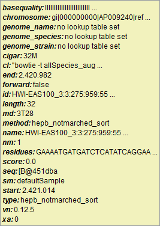
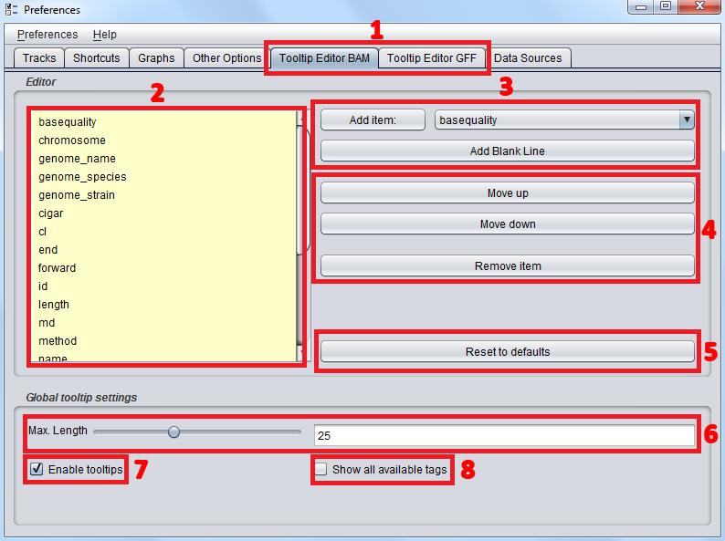

While hovering over read glyphs genometa displays information about the read (or annotation) in form of a tooltip overlay (see figure 1). The contents of this tooltip can be changed by using the tooltip editor for the corresponding glyph type (BAM for read glyphs, GFF for annotation glyphs) by opening the Preferences Window (File->Preferences) and switching to the corresponding tab (see figure 2, element 1).

Figure 1
In the following example the BAM tab is used to visualize the different control widgets, the GFF editor only differs in the available item tags.

Figure 2
Figure 2 shows the tooltip editor tab in the preference pane. The tab is divided into the editor itself and global settings that affect all tooltips regardles of type.
Editing TooltipsThe current display state of the tooltip is visualized in the tooltip preview (see figure 2, element 2). All item tags that are displayed in this field are visualized by the tooltip, in the same order they appear here. Item tags can be added to the list by choosing an available item tag from the combo box and clicking "Add item:" (see figure 2, element 3). Furthermore a blank link can be added to the tooltip by clicking "Add Blank Line" for easier reading of tag groups.
For changing the order of tags a tag can be selected from the tooltip preview window and moved by clicking either "Move up" or "Move down" (see figure 2, element 4). Clicking "Remove item" will remove the selected item or blank line from the tooltip
"Reset to defaults" will reset all changes made to the tooltip and restore the initial state of the editor (see figure 2, element 5)
Global SettingsThe Global settings panel houses settings that affect all tooltips regardless of glyph type: The Max. Length Slider (see figure 2, element 3) allows setting the width of the generated tooltip window. By default all item tag values that exceed this number will be truncated. Increase this value to accomodate for very long tooltip strings.
"Enable tooltips" globally enables or disables the display of tooltips (see figure 2, element 7), while "Show all available tags" (see figure 2, element 8) will generate tooltips showing all available tag items regardless of the tags chosen in the appropriate editor preview.